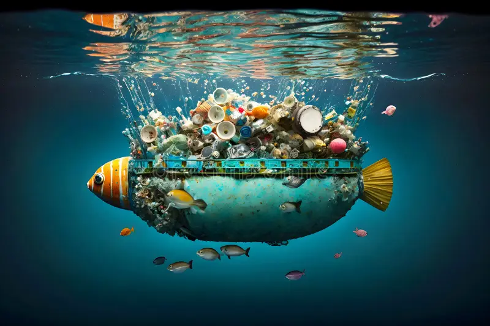
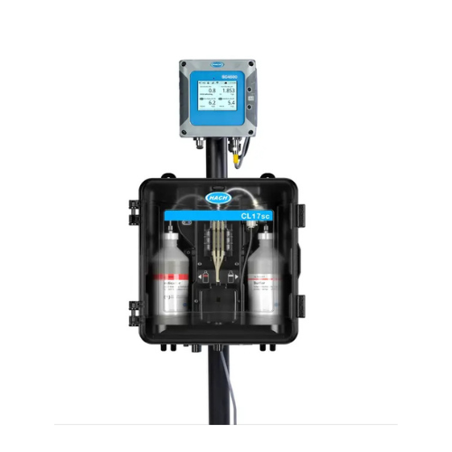
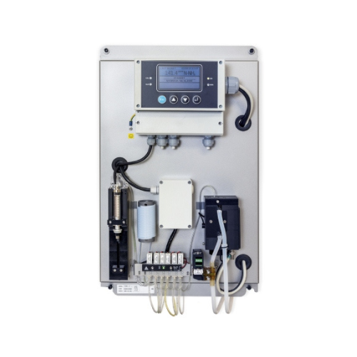

Online Water Quality Analyzer Supplier in India
Agua Instruments is a water quality analyzer supplier in Mumbai, serving customers across India. Our online water analyzers deliver precise Online Water Quality Monitoring and Continuous Water Analysis for pH, ORP, TDS, turbidity, dissolved oxygen, conductivity, chlorine and COD, helping industries stay compliant and maintain water quality with reliable, real-time data.

Why Choose Agua Instruments as Your Water Analyzer Supplier?
Advanced Technology
Our water analyzers leverage cutting-edge technology for precise and reliable measurements.
Real-Time Water Analysis
Benefit from real-time data to make informed decisions and maintain water quality.
Custom Solutions
We offer tailored solutions to meet the specific needs of different industries.
Expert Support
Our team provides comprehensive support, from installation to maintenance and technical assistance.
Cost-Effective
Our solutions are competitively priced, ensuring you get the best value without compromising on quality or performance.

Ensure safe and clean drinking water by monitoring various quality parameters in real-time.

Maintain the quality of process water in manufacturing, food processing, and other industries.

Monitor and assess water quality in natural water bodies to protect ecosystems and comply with regulations.

Analyze effluent water to ensure it meets regulatory standards before discharge.

Monitor water quality in irrigation systems to ensure optimal crop growth and safety.



Looking for a reliable water quality analyzer supplier? Agua Instruments supplies online water quality analyzers, portable and fixed water analyzers, and multi-parameter systems to industries, effluent treatment plants (ETPs), CEMS installations, municipal water treatment plants and laboratories across India.